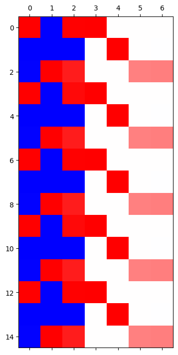
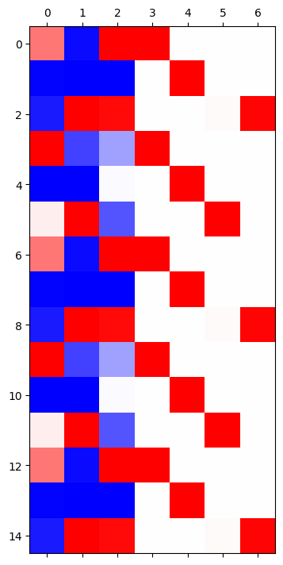
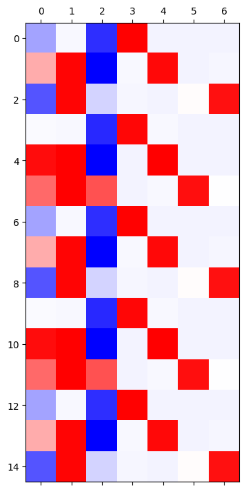

import torch
import numpy as np
import pandas as pd
import matplotlib.pyplot as plt
import time
from tqdm import tqdm
def f(txt,mapping):
return [mapping[key] for key in txt]
soft = torch.nn.Softmax(dim=1)RNN과 LSTM
RNN과 LSTM 성능 비교 (data: abcabC)
RNN
txt = list('abcabC')*100
txt_x = txt[:-1]
txt_y = txt[1:]
mapping = {'a':0, 'b':1, 'c':2, 'C':3}
x = torch.nn.functional.one_hot(torch.tensor(f(txt_x,mapping))).float()
y = torch.nn.functional.one_hot(torch.tensor(f(txt_y,mapping))).float()
x = x.to('cuda:0')
y = y.to('cuda:0')torch.manual_seed(43052)
rnn = torch.nn.RNN(4,3).to('cuda:0')
lin = torch.nn.Linear(3,4).to('cuda:0')
loss_fn = torch.nn.CrossEntropyLoss()
optim = torch.optim.Adam(list(rnn.parameters())+ list(lin.parameters()))for epoch in tqdm(range(12000)):
_water = torch.zeros(1,3).to('cuda:0')
hidden, ht = rnn(x,_water)
output = lin(hidden)
loss = loss_fn(output, y)
loss.backward()
optim.step()
optim.zero_grad()100%|██████████| 12000/12000 [00:53<00:00, 225.40it/s]yhat = soft(output)
combined = torch.concat([hidden, yhat], axis = 1).data.to('cpu')plt.matshow(combined[-15:], cmap = 'bwr')<matplotlib.image.AxesImage at 0x21d5a8fa130>
- c와 C를 잘 구별하지 못하는 것을 알 수 있음
- 둘이 비슷한 확률로 출력됨
- 추가로 3000번 더 학습을 시켜보자!
for epoch in tqdm(range(3000)):
_water = torch.zeros(1,3).to('cuda:0')
hidden, ht = rnn(x,_water)
output = lin(hidden)
loss = loss_fn(output, y)
loss.backward()
optim.step()
optim.zero_grad()100%|██████████| 3000/3000 [00:13<00:00, 222.97it/s]yhat = soft(output)
combined = torch.concat([hidden, yhat], axis = 1).data.to('cpu')plt.matshow(combined[-15:], cmap = 'bwr')<matplotlib.image.AxesImage at 0x21d5b15f700>
- RNN은 15000번 정도 실행을 해야 c와 C를 구별할 수 있음
LSTM
torch.manual_seed(43052)
lstm = torch.nn.LSTM(4,3).to('cuda:0')
lin = torch.nn.Linear(3,4).to('cuda:0')
loss_fn = torch.nn.CrossEntropyLoss()
optim = torch.optim.Adam(list(lstm.parameters())+ list(lin.parameters()))for epoch in tqdm(range(6000)):
_water = torch.zeros(1,3).to('cuda:0')
hidden, (ht, ct) = lstm(x,(_water,_water))
output = lin(hidden)
loss = loss_fn(output, y)
loss.backward()
optim.step()
optim.zero_grad()100%|██████████| 6000/6000 [00:26<00:00, 223.70it/s]yhat = soft(output)
combined = torch.concat([hidden, yhat], axis = 1).data.to('cpu')plt.matshow(combined[-15:], cmap = 'bwr')<matplotlib.image.AxesImage at 0x21d56bd3790>
- LSTM은 6000번의 학습으로도 c와 C를 구별할 수 있음
LSTM의 구조
sig = torch.nn.Sigmoid()
tanh = torch.nn.Tanh()
soft = torch.nn.Softmax(dim=1)txt = list('abaB') * 100
txt_x = txt[:-1]
txt_y = txt[1:]
mapping = {'a':0, 'b':1, 'B':2}
x = torch.nn.functional.one_hot(torch.tensor(f(txt_x,mapping))).float()
y = torch.nn.functional.one_hot(torch.tensor(f(txt_y,mapping))).float()torch.manual_seed(43052)
lstm_cell = torch.nn.LSTMCell(3, 2)
lin = torch.nn.Linear(2,3)
loss_fn = torch.nn.CrossEntropyLoss()
optim = torch.optim.Adam(list(lstm_cell.parameters())+list(lin.parameters()))lstm_cell.weight_ih.T.shapetorch.Size([3, 8])T = len(x)
for epoch in range(1):
ht = torch.zeros(1,2)
ct = torch.zeros(1,2)
loss = 0
for t in range(T):
xt,yt = x[[t]], y[[t]]
ht, ct = lstm_cell(xt, (ht, ct))
_ifgo = xt@lstm_cell.weight_ih.T + ht@lstm_cell.weight_hh.T + lstm_cell.bias_hh + lstm_cell.bias_ih
# gate calculate
input_gate = sig(_ifgo[:,0:2])
forget_gate = sig(_ifgo[:,2:4])
output_gate = sig(_ifgo[:,6:8])
gt = tanh(_ifgo[:,4:6])
ct = forget_gate*ct + input_gate*gt
ht = output_gate*ct + tanh(ct)
ot = lin(ht)
# loss = loss + loss_fn(ot, yt)
# loss = loss/T
# loss.backward()
# optim.step()
# optim.zero_grad()LMTM은 아래와 같은 방식으로 output을 산출함 - \((x_t, h_{t-1}) \overset{lin}{\to} {a, b, c, d} \to [\sigma(a), \sigma(b), \tanh(c), \sigma(d)] = [i_t, f_t, g_t, o_t]\)
- gate - input_gate: \(i_t\) -> \(g_t\)의 값을 얼마나 통과시킬지를 0~1 사이의 값으로 보여줌 - forget_gate: \(f_t\) -> \(C_{t-1}\)의 값을 얼마나 통과시킬지를 0~1 사이의 값으로 보여줌 - output_gate: \(o_t\) -> \(tanh(C_{t})\)의 값을 얼마나 통과시킬지를 0~1 사이의 값으로 보여줌
- another value(?) - gt: \(g_t\) -> \(\sigma((W_{o1} X_t) + (W_{o2} h_{t-1}) + bias)\) -> 현재와 과거의 값을 선형결합 (w와 x또는 h를 곱함) 후 tanh를 통과시켜 -1에서 1사이의 값으로 보여줌
ct: \(c_t\)
->\(forgetgate * C_{t-1} + inputgate * g_t\)->*는 아다마르 곱으로 요소별로 선택한 후 곱하는 연산으로 \(g_t\)연산과는 다름ht: \(h_t\)
->\(tanh(C_t)*O_t\)
ht, ct(tensor([[-0.0406, 0.2505]], grad_fn=<MulBackward0>),
tensor([[-0.0975, 0.7134]], grad_fn=<AddBackward0>))